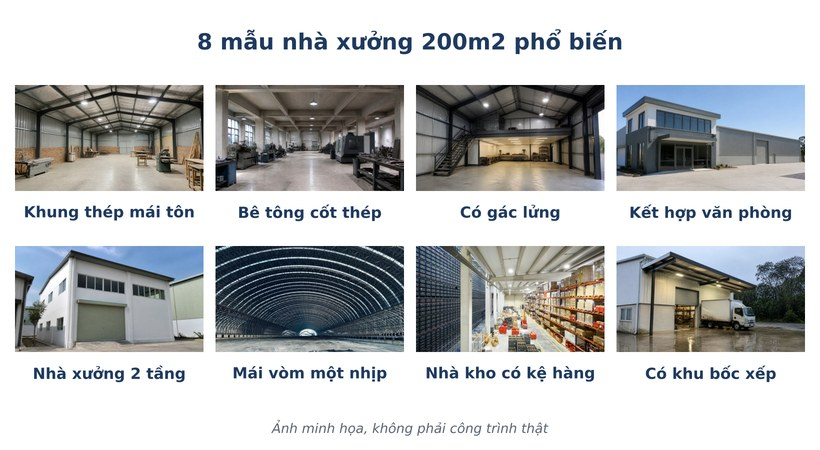
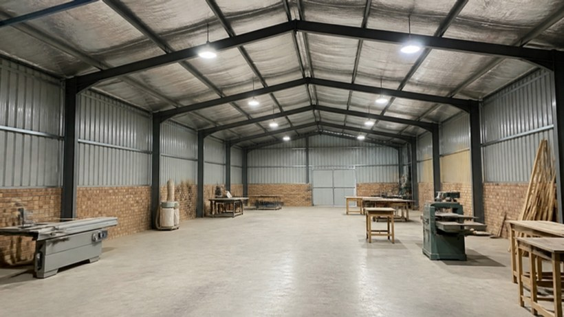
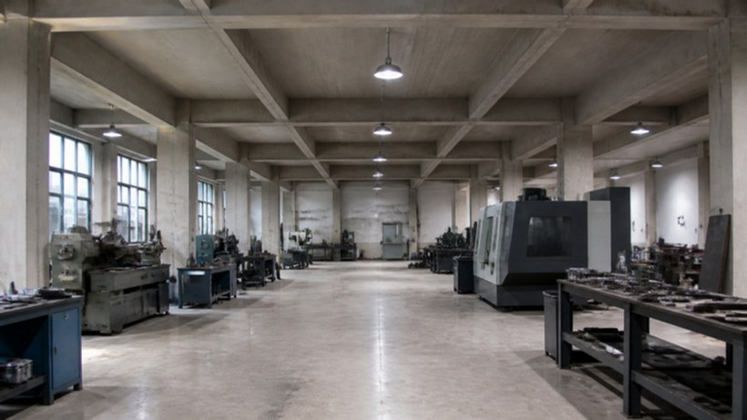
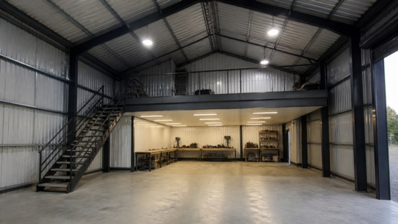
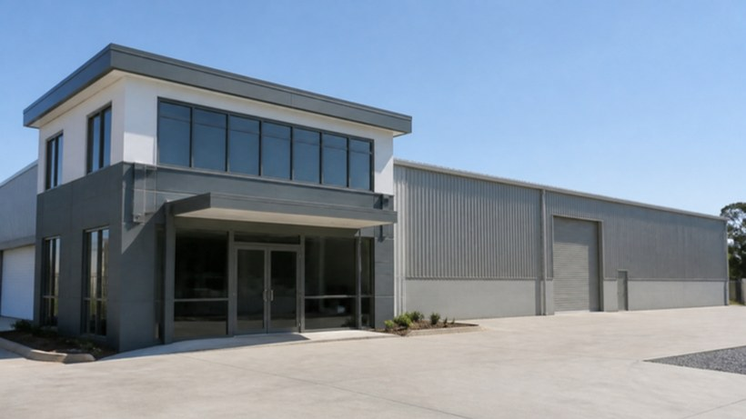
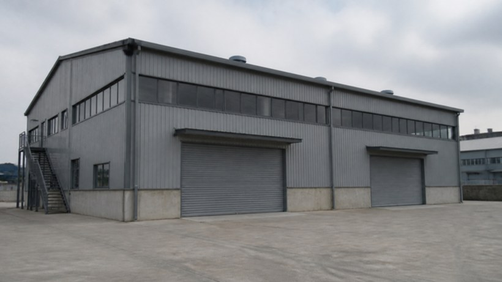
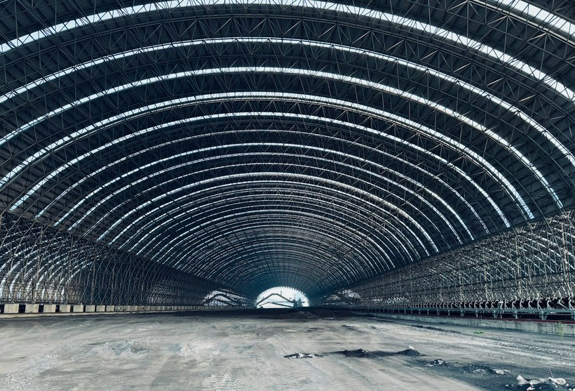
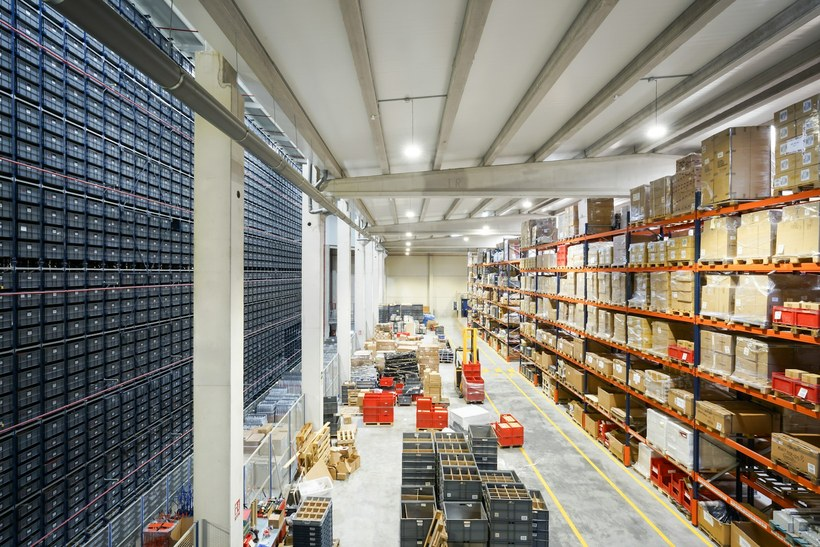
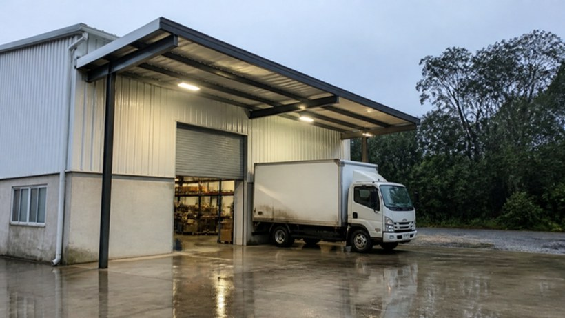
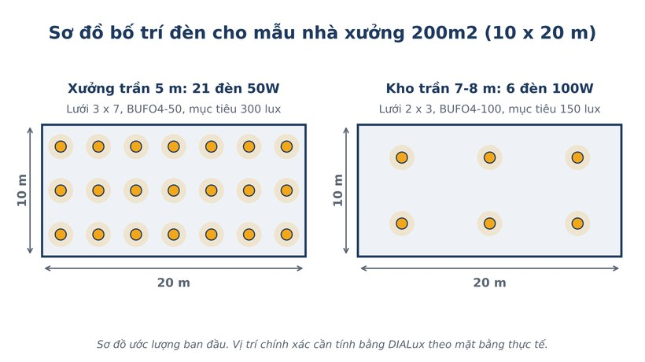

GHI CHÚ BIÊN TẬP. XÓA TOÀN BỘ PHẦN NÀY TRƯỚC KHI ĐĂNG.
LOẠI: CẬP NHẬT BÀI CŨ. Bài gốc ID 3603: https://denlednhaxuongcaocap.com/tu-van/mau-nha-xuong-nho-dep/, tiêu đề hiện tại "20+ mẫu nhà xưởng nhỏ đẹp 100m2 200m2 300m2 500m2…bản vẽ thiết kế nhà xưởng nhỏ miễn phí".
Cách đăng: không bấm Đăng bản nháp này. Mở bài gốc ID 3603, thay toàn bộ nội dung bằng phần dưới dòng NỘI DUNG BÀI, sửa tiêu đề thành tiêu đề mới, cập nhật SEO title và meta description trong Rank Math, bấm Cập nhật, rồi chuyển bản nháp này vào thùng rác.
| Tiêu đề mới cho bài gốc | Mẫu nhà xưởng 200m2: 8 kiểu phổ biến, chi phí và cách bố trí đèn |
| Focus keyword | mẫu nhà xưởng 200m2 |
| SEO title | Mẫu nhà xưởng 200m2: 8 kiểu phổ biến và cách bố trí đèn |
| Meta description | Mẫu nhà xưởng 200m2 phổ biến, kích thước, chi phí xây tham khảo và ví dụ tính số đèn cho xưởng 10 x 20 m theo chiều cao trần và độ rọi QCVN. |
| Slug | mau-nha-xuong-nho-dep (giữ nguyên URL cũ) |
| Tag đề xuất | nhà xưởng nhỏ, thiết kế nhà xưởng, chiếu sáng nhà xưởng, nhà xưởng khung thép, độ rọi nhà xưởng |
1. Placeholder còn lại
Năm chỗ [CẦN KIỂM TRA] / [CẦN BỔ SUNG] đã được điền ngày 21/10/2026, cách xử lý từng chỗ:
| Vị trí | Đã điền | Mức chắc chắn |
|---|---|---|
| H3 "Mái, độ dốc và lấy sáng tự nhiên" | Bỏ con số tỷ lệ. Không tìm được nguồn chính thống nêu tỷ lệ cố định, chỉ có trang bán tôn. Thay bằng hướng dẫn tính theo hệ số ánh sáng ban ngày | Chắc chắn (không đưa số không có nguồn) |
| H3 "Phòng cháy chữa cháy với xưởng quy mô nhỏ" | Ngưỡng thẩm định thiết kế theo Phụ lục III Nghị định 105/2025/NĐ-CP, mục 9.4 và 10 | Nguồn thứ cấp chép nguyên văn phụ lục. Nên đối chiếu bản gốc |
| H3 "Chi phí thiết kế" | Ví dụ 30.000 đồng/m² của Wedo (đơn giá do Wedo giả định) | Số liệu doanh nghiệp, đã ghi rõ là ví dụ |
| FAQ "Xây nhà xưởng 200m2 mất bao lâu?" | 2-3 tuần cho nhà tiền chế 200m2, theo công bố của Wedo | Số liệu doanh nghiệp, đã ghi tên nguồn |
| FAQ "giấy phép xây dựng" | Đã bỏ số khoản vì nguồn ghi ở mục 2 không khớp khoản 2 Điều 43, chèn [CẦN KIỂM TRA] | Chưa chắc chắn, cần đối chiếu bản gốc Luật 135/2025/QH15 |
Còn lại: 10 vị trí [ẢNH] (1 ảnh tổng hợp, 8 ảnh mẫu, 1 sơ đồ), bạn gửi ảnh sau (xem mục 5).
2. Nguồn đã dùng (truy cập 21/10/2026)
3. Link chưa xác minh: không có. Năm link nội bộ trong bài đều đã mở được.
4. Đề xuất link từ bài cũ về bài này
| Bài cũ | Câu đặt link | Anchor |
|---|---|---|
| /tu-van/ban-ve-nha-xuong-nho/ | Đoạn mở đầu hoặc phần bản vẽ 200m2: "Nếu chưa chọn được kiểu kết cấu, bạn có thể xem trước các mẫu nhà xưởng 200m2 phổ biến." | mẫu nhà xưởng 200m2 |
| /tu-van/mau-nha-xuong-don-gian/ | Phần kết: "Với diện tích dưới 500m2, tham khảo thêm các mẫu nhà xưởng nhỏ kèm cách bố trí đèn." | mẫu nhà xưởng nhỏ |
| /tu-van/mau-nha-xuong-2-tang/ | Phần nói về diện tích đất nhỏ: "Trên lô đất khoảng 200m2, xưởng 2 tầng là một trong các phương án của nhà xưởng 200m2." | nhà xưởng 200m2 |
| /tu-van/ban-ve-chieu-sang-nha-xuong/ | Phần ví dụ bản vẽ: "Ví dụ tính số đèn cho xưởng 10 x 20 m có trong bài bố trí đèn cho nhà xưởng 200m2." | bố trí đèn cho nhà xưởng 200m2 |
5. Ảnh cần chuẩn bị
6. Schema: Article và FAQPage (4 câu).
7. Chênh lệch phát hiện trên website
8. Điểm cần bạn quyết định
NỘI DUNG BÀI BẮT ĐẦU TỪ ĐÂY
Với mẫu nhà xưởng 200m2, phương án được chọn nhiều nhất là khung thép tiền chế 1 tầng, mái tôn, kích thước khoảng 10 x 20 m. Kiểu này dựng nhanh, chi phí dễ kiểm soát và đủ chỗ cho một dây chuyền nhỏ hoặc một kho hàng. Phần khó thường không nằm ở chọn mẫu, mà ở những chi tiết làm sau mới thấy tốn: mái quá nóng, nền yếu, đèn bố trí sai làm xưởng tối dù đã lắp nhiều.
Chọn nhanh theo nhu cầu:
Cùng 200m2 nhưng tỷ lệ dài rộng khác nhau sẽ hợp với kiểu bố trí khác nhau. Trước khi chọn mẫu, bạn nên vẽ thử luồng hàng đi từ cửa nhập, qua khu sản xuất, ra cửa xuất.
| Kích thước | Phù hợp với | Lưu ý |
|---|---|---|
| 10 x 20 m | Dây chuyền thẳng, kho hàng có lối đi giữa | Phổ biến, dễ chia khu, khẩu độ 10 m dựng khung thép thường không cần cột giữa |
| 8 x 25 m | Lô đất hẹp, dây chuyền dài | Hai đầu xa nhau, nên có cửa ở cả hai đầu hồi |
| 12,5 x 16 m | Xưởng bố trí máy theo cụm, xưởng sửa chữa | Mặt bằng gần vuông, xe nâng quay đầu thuận hơn |
Phần lớn xưởng 200m2 được xây mới dùng khung thép tiền chế vì dựng nhanh và dễ mở rộng sau này. Bê tông cốt thép hợp hơn khi bạn cần xây 2 tầng, sàn chịu tải nặng hoặc muốn công trình bền lâu, ít bảo trì.
| Tiêu chí | Khung thép tiền chế | Bê tông cốt thép |
|---|---|---|
| Thời gian thi công | Nhanh, cấu kiện gia công sẵn ở xưởng | Lâu hơn, phải chờ bê tông đạt cường độ |
| Chi phí | Thường thấp hơn với xưởng 1 tầng | Cao hơn, đổi lại bền và chắc |
| Mở rộng, tháo dỡ | Dễ nối thêm nhịp, có thể tháo dời | Khó thay đổi sau khi xây |
| Bảo trì | Cần sơn chống gỉ định kỳ | Ít bảo trì phần kết cấu |
| Phù hợp | Xưởng 1 tầng, kho, xưởng thuê đất ngắn hạn | Xưởng 2 tầng, xưởng có tải sàn lớn |
Mỗi mẫu dưới đây kèm một lưu ý chiếu sáng riêng, vì kết cấu mái và chiều cao quyết định loại đèn dùng được.

Đây là mẫu cơ bản nhất: cột và kèo thép, xà gồ, mái tôn, tường gạch thấp kết hợp vách tôn. Phù hợp xưởng cơ khí nhỏ, xưởng mộc, kho hàng, xưởng lắp ráp. Nhược điểm là mái tôn hấp nhiệt mạnh nếu không có lớp chống nóng.
Lưu ý chiếu sáng: không treo đèn sát mái tôn. Lớp không khí ngay dưới mái nóng nhất, driver (bộ nguồn) của đèn làm việc lâu ở nhiệt độ cao sẽ nhanh xuống cấp.

Cột, dầm bê tông, mái tôn hoặc mái bê tông. Hợp với xưởng đặt máy nặng, xưởng gần khu dân cư cần cách âm tốt hơn, hoặc chủ đầu tư muốn dùng lâu dài. Chi phí và thời gian thi công cao hơn khung thép.
Lưu ý chiếu sáng: dầm bê tông thường to và thấp hơn kèo thép. Vị trí đèn nên tránh nằm sát dầm, nếu không dầm sẽ che một phần ánh sáng và tạo vệt tối trên sàn.

Một phần xưởng, thường ở đầu hồi, làm gác lửng để chứa đồ nhẹ hoặc làm văn phòng. Mẫu này tận dụng chiều cao mà không phải xin thêm diện tích đất. Cần tính kỹ tải trọng sàn gác và cầu thang thoát nạn.
Lưu ý chiếu sáng: khu dưới gác trần thấp, chỉ khoảng 2,5-3 m, không dùng chung loại đèn với khu xưởng cao. Khu này hợp với đèn tuýp hoặc đèn panel, còn khu xưởng giữ đèn nhà xưởng treo cao.

Khối văn phòng 1-2 tầng đặt ở mặt trước, phía sau là xưởng. Hợp với doanh nghiệp nhỏ cần tiếp khách, làm hồ sơ ngay tại xưởng. Cần ngăn bụi và tiếng ồn giữa hai khu.
Lưu ý chiếu sáng: văn phòng cần độ rọi 300 lux cho phòng làm việc chung theo QCVN 22:2016/BYT, ánh sáng nên dịu, ít chói. Tách mạch điện chiếu sáng văn phòng và xưởng để tắt riêng từng khu.

Tổng diện tích sàn 400m2 trên 200m2 đất. Tầng 1 đặt máy nặng, nhập xuất hàng; tầng 2 làm kho nhẹ, khu đóng gói hoặc may. Cần thang hàng hoặc tời nâng, kết cấu thường là bê tông cốt thép hoặc khung thép sàn deck.
Lưu ý chiếu sáng: tầng 1 thường cao 3,5-4,5 m nên dùng đèn công suất nhỏ, góc chiếu rộng. Tầng 2 sát mái tôn nóng, vì vậy càng cần chú ý khoảng cách từ đèn tới mái.

Mái cong một nhịp, ít hoặc không có cột giữa, thoát nước mưa nhanh. Hợp với kho chứa nông sản, vật liệu, khu cần mặt bằng thông suốt.
Lưu ý chiếu sáng: chiều cao từ mái tới sàn thay đổi theo vị trí, đỉnh vòm cao còn hai bên thấp. Nên dùng dây treo điều chỉnh được để các đèn ở cùng một cao độ, ánh sáng xuống sàn mới đều.

Mặt bằng thông, cửa cuốn lớn cho xe tải hoặc xe nâng, nền chịu tải cho kệ hàng. Có thể làm kệ nhiều tầng để tăng sức chứa.
Lưu ý chiếu sáng: kệ cao tạo ra các lối đi hẹp và sâu. Đèn nên đặt thẳng trên lối đi giữa các dãy kệ, không đặt trên nóc kệ, nếu không mặt hàng ở tầng thấp sẽ bị tối.

Xưởng có mái hiên vươn ra phía trước vài mét để xe vào bốc dỡ hàng khi trời mưa. Hợp với xưởng thực phẩm, xưởng bao bì, xưởng có nhiều chuyến hàng mỗi ngày.
Lưu ý chiếu sáng: khu mái hiên là nơi bị hắt mưa. Đèn ở đây cần cấp bảo vệ IP (khả năng chống bụi và nước) từ IP65 trở lên, không dùng loại đèn IP54 chỉ dành cho trong nhà.

Mái tôn xưởng nhỏ cần đủ độ dốc để thoát nước nhanh, độ dốc cụ thể do đơn vị thiết kế tính theo loại tôn và chiều dài mái. Tấm lấy sáng (tôn nhựa trong) giúp giảm giờ bật đèn ban ngày, nhưng đặt nhiều quá sẽ làm xưởng nóng và chói.
Cách làm hay gặp là bố trí tấm lấy sáng thành dải xen kẽ, tránh đặt ngay trên bàn thao tác hoặc máy có màn hình. Không có một tỷ lệ diện tích cố định dùng chung cho mọi xưởng. Diện tích tấm lấy sáng nên để đơn vị thiết kế tính theo hệ số ánh sáng ban ngày, tức tỷ lệ giữa độ rọi trong xưởng và độ rọi ngoài trời, và theo hướng mái của từng công trình.
Nền xưởng phải chịu được máy móc, kệ hàng và xe nâng nếu có. Kho chứa hàng nặng hoặc xưởng đặt máy dập cần nền bê tông dày hơn xưởng may, xưởng lắp ráp nhẹ.
Hãy báo trước cho đơn vị thiết kế loại máy, trọng lượng và vị trí đặt máy. Gia cố nền sau khi đã đổ bê tông tốn kém hơn nhiều so với tính đúng từ đầu.
Xưởng mái tôn 200m2 vào mùa hè dễ nóng hơn nhiều so với ngoài trời nếu không có lớp chống nóng. Các cách thường dùng là tôn cách nhiệt (tôn xốp, tôn PU), quạt hút trên mái hoặc tường, cửa chớp lấy gió ở hai đầu hồi.
Nhiệt độ trong xưởng cũng ảnh hưởng tới đèn. Đèn LED tỏa nhiệt qua thân nhôm, xưởng càng nóng thì tản nhiệt càng khó, nên thông gió tốt cũng giúp đèn bền hơn.
Yêu cầu phòng cháy chữa cháy phụ thuộc vào hạng nguy hiểm cháy của hàng hóa và công việc trong xưởng. Hạng A, B là nhóm nguy hiểm cháy nổ cao như xăng dầu, dung môi; hạng C gồm vật liệu cháy được như gỗ, giấy, vải; hạng D, E là vật liệu khó cháy hoặc không cháy.
Theo Phụ lục III Nghị định 105/2025/NĐ-CP (hiệu lực từ 01/07/2025), công trình sản xuất phải thẩm định thiết kế phòng cháy chữa cháy khi đạt các ngưỡng sau:
| Hạng nguy hiểm cháy | Ngưỡng phải thẩm định thiết kế |
|---|---|
| Nhà sản xuất hạng A, B | Khối tích từ 7.000 m³ hoặc tổng diện tích sàn từ 1.000m2 |
| Nhà sản xuất hạng C | Khối tích từ 15.000 m³ hoặc tổng diện tích sàn từ 2.000m2 |
| Nhà sản xuất hạng D, E | Khối tích từ 30.000 m³ hoặc tổng diện tích sàn từ 10.000m2 |
| Nhà kho hàng hạng A, B, C | Khối tích từ 15.000 m³ hoặc tổng diện tích sàn từ 2.000m2 |
Xưởng 200m2 thông thường nằm dưới các ngưỡng này, trừ nhóm công trình đặc thù như kho xăng dầu, kho khí hóa lỏng, cơ sở liên quan vật liệu nổ. Không thuộc diện thẩm định không có nghĩa là bỏ qua phòng cháy chữa cháy: xưởng vẫn cần lối thoát nạn, bình chữa cháy và đèn chiếu sáng sự cố. Bạn nên hỏi cơ quan cảnh sát phòng cháy chữa cháy tại địa phương từ khi lên thiết kế.
Khi thiết kế điện, cộng đủ công suất máy móc, chiếu sáng, quạt hút và dự phòng cho máy mua thêm sau này. Tủ điện nên đặt gần cửa ra vào, ở chỗ khô ráo, dễ tiếp cận.
Chiếu sáng nên chia ít nhất 2-3 mạch theo dãy đèn. Như vậy ban ngày có thể tắt dãy gần tấm lấy sáng, khi sửa chữa cũng không phải cắt điện cả xưởng.
Chi phí dưới đây là số liệu công bố công khai của đơn vị trong ngành xây dựng, chỉ để bạn hình dung khoảng ngân sách. HLB là đơn vị phân phối đèn nhà xưởng, không thi công xây dựng, nên bạn cần lấy báo giá trực tiếp từ đơn vị thiết kế, thi công.
Chi phí thiết kế thường tính theo m² sàn hoặc theo gói hồ sơ: kiến trúc, kết cấu, điện nước, phòng cháy chữa cháy. Với xưởng khung thép tiền chế, nhiều đơn vị gộp chi phí thiết kế vào gói thi công.
Cách tính phổ biến là đơn giá thiết kế nhân với diện tích sàn. Wedo đưa ví dụ với đơn giá giả định 30.000 đồng/m²: xưởng 200m2 một tầng có chi phí thiết kế khoảng 6 triệu đồng. Đơn giá thực tế tùy đơn vị và mức chi tiết của hồ sơ, nên bạn cần hỏi báo giá cụ thể.
Theo bài dự toán của Vĩnh Tường đăng ngày 30/06/2026:
| Hạng mục | Chi phí tham khảo cho xưởng 200m2 |
|---|---|
| Phần thô và xưởng cơ bản | 250-700 triệu đồng |
| Thi công trọn gói | 1-1,2 tỷ đồng |
| Dự phòng phát sinh | 5-10% tổng ngân sách |
Bảng giá tham khảo năm 2025 của Wedo tách theo kết cấu:
| Kết cấu | Đơn giá tham khảo | Chi phí ước tính cho 200m2 |
|---|---|---|
| Khung thép tiền chế | 1.500.000-2.200.000 đồng/m² | 300-440 triệu đồng |
| Bê tông cốt thép | 2.600.000-3.400.000 đồng/m² | 520-680 triệu đồng |
| Móng, nền, sơn epoxy (tùy chọn) | 400.000-800.000 đồng/m² | 80-160 triệu đồng |
Trong phần hoàn thiện có hệ thống điện và chiếu sáng. Với ví dụ trần 5 m ở phần sau, 21 đèn BUFO4-50 tính theo giá niêm yết 2.550.000 đồng/bộ là khoảng 53,6 triệu đồng tiền đèn (giá tham khảo ngày 21/10/2026, thay đổi theo số lượng đặt và thời điểm mua, chưa gồm dây, tủ điện và công lắp).
Phần chiếu sáng nên tính cùng lúc với thiết kế, không để tới khi xưởng xây xong mới mua đèn. Lúc đó móc treo, máng cáp và mạch điện đã cố định, muốn đổi bố trí sẽ tốn công.
QCVN 22:2016/BYT quy định độ rọi duy trì tối thiểu theo từng loại công việc, một số mức hay gặp ở xưởng nhỏ:
| Khu vực, công việc | Độ rọi tối thiểu (lux) |
|---|---|
| Nhà kho, kho lạnh | 100 |
| Khu vực giá để hàng hóa | 150 |
| Lắp ráp chi tiết thô | 200 |
| Lắp ráp chi tiết trung bình, rèn, hàn, nguội | 300 |
| Xưởng cưa, làm trên bàn mộc, gắn keo, lắp ghép | 300 |
| Khu vực đóng gói hàng gửi đi | 300 |
| Lắp ráp chi tiết nhỏ | 500 |
| May, đan sợi nhỏ, thêu móc | 750 |
Bảng đầy đủ và cách giải thích chi tiết có trong bài tiêu chuẩn độ rọi theo không gian. Xưởng có nhiều loại công việc thì tính theo khu, không lấy một mức cho cả xưởng.
Bảng dưới đây là kinh nghiệm phổ biến cho xưởng 200m2, không phải tiêu chuẩn. Số đèn cụ thể vẫn phải tính theo độ rọi ở mục sau.
| Chiều cao lắp đèn | Công suất mỗi đèn | Góc chiếu | Ghi chú |
|---|---|---|---|
| 4-6 m | 50-80W | 90-120 độ | Nhiều đèn công suất nhỏ cho ánh sáng đều hơn |
| 6-8 m | 100-150W | 90 độ | Phổ biến với xưởng khung thép 1 tầng |
| 8-10 m | 150-200W | 60-90 độ | Ít gặp ở xưởng 200m2, chủ yếu là kho kệ cao |
Treo đèn quá cao so với công suất làm sàn tối. Ngược lại, đèn công suất lớn treo thấp với góc chiếu hẹp tạo vùng sáng chói ngay dưới đèn và vùng tối giữa hai đèn.
Công thức thường dùng là phương pháp quang thông:
N = (E x S) / (Φ x UF x MF)
Trong đó N là số đèn, E là độ rọi cần đạt (lux), S là diện tích (m²), Φ là quang thông một đèn (lm), UF là hệ số sử dụng, MF là hệ số duy trì (tính tới bụi bẩn và suy giảm ánh sáng theo thời gian).
Hai ví dụ dưới đây dùng đèn dòng cao cấp do HALEDCO sản xuất, HLB phân phối, với quang thông lấy theo trang sản phẩm.
Trường hợp 1: xưởng mộc hoặc cơ khí nhỏ, trần 5 m, cần 300 lux
Trường hợp 2: kho có giá kệ, trần 7-8 m, cần 150 lux

Kết quả trên chỉ để ước lượng ban đầu. Số lượng và vị trí chính xác cần tính bằng phần mềm mô phỏng chiếu sáng như DIALux theo mặt bằng, màu tường, chiều cao kệ thực tế. Xem thêm các mẫu đèn LED nhà xưởng 50W cho xưởng trần thấp và đèn LED nhà xưởng cao cấp 100W cho xưởng trần 7-8 m.
Khi tư vấn chiếu sáng cho các xưởng 200-300m2, chúng tôi hay gặp những lỗi dưới đây. Phần lớn có thể tránh nếu tính từ lúc thiết kế.
Các cách treo và khoảng cách lắp được hướng dẫn chi tiết trong bài cách bố trí đèn nhà xưởng.
Nếu diện tích đất khác 200m2, các mẫu kết cấu ở trên vẫn dùng được, chỉ thay đổi kích thước và số đèn. Số đèn trong bảng tính cùng giả định với ví dụ trên: 300 lux, UF 0,6, MF 0,8.
| Diện tích | Kích thước hay gặp | Đèn gợi ý | Số đèn ước tính |
|---|---|---|---|
| 100m2 | 8 x 12,5 m, 10 x 10 m | BUFO4-50 (6.500 lm), trần 4-6 m | 10 đèn |
| 300m2 | 12 x 25 m, 15 x 20 m | BUFO4-100 (13.000 lm), trần 6-8 m | 15 đèn |
| 500m2 | 20 x 25 m | BUFO4-100 (13.000 lm), trần 6-8 m | 25 đèn |
Bản vẽ mặt bằng, mặt cắt cho từng kích thước có trong bài bản vẽ nhà xưởng nhỏ.
Theo ví dụ trong bài, xưởng 10 x 20 m trần 5 m dùng 21 đèn 50W, tổng khoảng 1.050W. Nếu bật 8 giờ mỗi ngày, mức tiêu thụ là khoảng 8,4 kWh mỗi ngày (ước tính). Kho trần 7-8 m dùng 6 đèn 100W, tổng 600W, khoảng 4,8 kWh cho 8 giờ (ước tính). Khi tính tải điện cho cả xưởng, phần chiếu sáng chỉ là một phần nhỏ, máy móc mới là phần chính.
Có. Với xưởng 200m2, nên chia ít nhất theo khu: dãy đèn gần cửa và tấm lấy sáng một mạch, khu thao tác một mạch, kho hoặc gác lửng một mạch. Ban ngày có thể tắt dãy gần nguồn sáng tự nhiên, chỉ bật khu cần. Chi phí thêm chủ yếu là dây và công tắc, nên làm ngay từ lúc đi dây sẽ rẻ hơn sửa sau. [CẦN KIỂM TRA: dòng đèn đang bán có hỗ trợ dimming hoặc cảm biến không, nếu có thì nhắc thêm.]
Xưởng khung thép tiền chế thường nhanh hơn bê tông cốt thép, vì cột kèo được gia công sẵn rồi mới mang tới công trình dựng. Theo công bố của Wedo, nhà tiền chế 200m2 có thể thi công trong khoảng 2-3 tuần. Bạn nên cộng thêm thời gian làm móng, xin phép (nếu có) và hoàn thiện, vì các phần này phụ thuộc thời tiết và nền đất.
Tùy vị trí đất và loại công trình. Theo Luật Xây dựng số 135/2025/QH15 [CẦN KIỂM TRA: điều, khoản miễn giấy phép cho công trình cấp IV và điều kiện quy mô, đối chiếu bản gốc], công trình cấp IV có thể được miễn giấy phép nếu không nằm trong khu chức năng, khu dân cư hoặc khu phát triển đô thị đã có quy hoạch. Xưởng trong khu đã có quy hoạch thường vẫn phải xin phép, trừ khi dự án thuộc diện miễn riêng. Bạn nên hỏi phòng quản lý đô thị hoặc ban quản lý khu công nghiệp nơi xây trước khi thiết kế.
Xưởng sản xuất nhẹ trên đất rộng, chọn khung thép 1 tầng kích thước 10 x 20 m, trần 5-6 m, dùng đèn 50W bố trí dày. Đất hẹp hoặc cần văn phòng tại chỗ, chọn xưởng 2 tầng hoặc thêm gác lửng, và tách loại đèn theo từng khu cao thấp. Kho hàng có kệ, ưu tiên trần 7-8 m, dùng đèn 100W đặt trên lối đi.
Gửi kích thước nhà xưởng, chiều cao trần và loại công việc, HLB tính số lượng và vị trí đèn bằng DIALux cho bạn. Liên hệ hotline hoặc Zalo 0967569588 để được tư vấn.